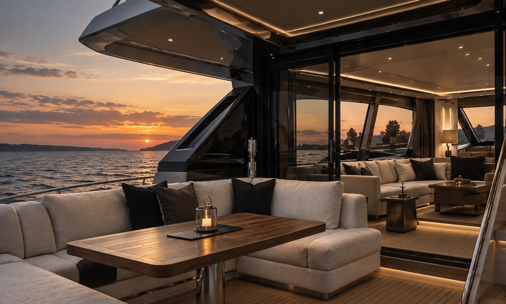

Interiores personalizados
Yachts.
Homes.
Cars.
Design, refit e interiores personalizados.
Do conceito à execução.
No mar
Em casa
Na estrada
Em casa
Na estrada
01 —— 03

Yachts
Refit · interiores · bespoke
→
Homes
Interiores · remodelação · à medida
→
Cars
Interiores · detailing · personalização
→A nossa abordagem
Um processo
sem ruído.
Da primeira ideia ao último detalhe, coordenamos cada fase com parceiros especializados para garantir um resultado coerente e cuidado.
O processo →01Descobrir
02Levantar
03Desenhar
04Visualizar
05Desenvolver
06Produzir
07Instalar
08Entregar

Estudo em destaque
Princess 56
Interior Refit
Uma proposta de refit que combina design contemporâneo com materiais intemporais.
Ver projeto →Os nossos materiais
Materiais
excecionais.
Detalhes duradouros.

Trabalhamos com materiais selecionados pela estética, desempenho e durabilidade, adaptados a cada ambiente.
Explorar materiais →